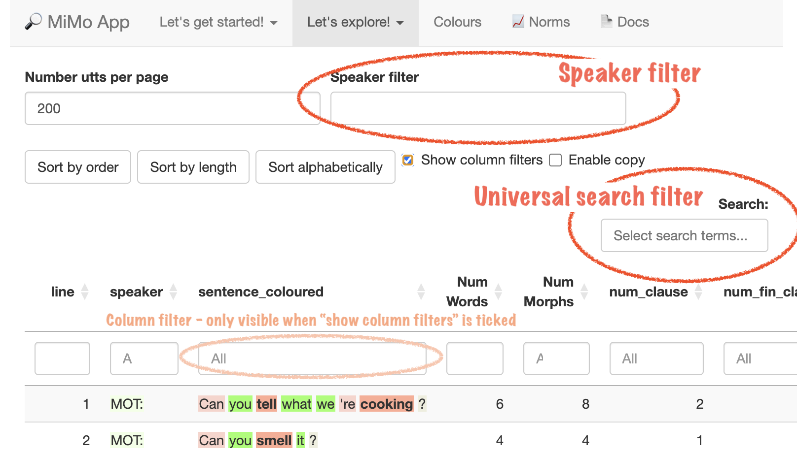
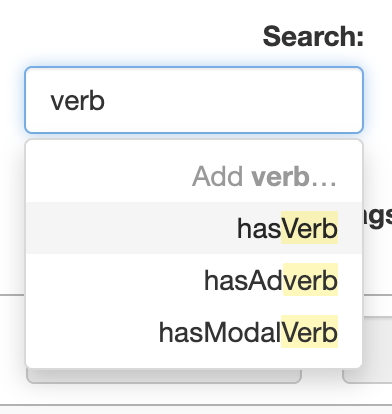
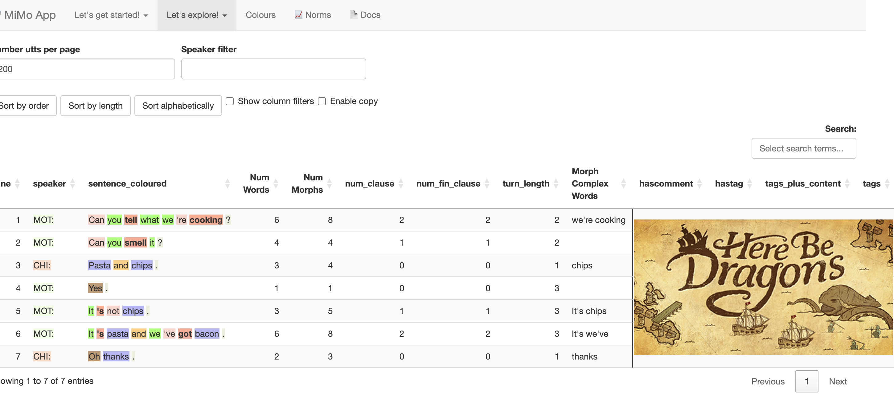

Filtering
What is ‘filtering’?
When you filter the table it will show only rows where a particular search string occurs.
How do you filter?
Here is a diagram showing the main search filters in MiMo:

Universal search filter
The filter box on the top right is called the universal search filter as it is possible to enter a wide variety of search terms (described below).
Speaker filter
The box on the top is the speaker filter designed to select specific speakers. We can use this to focus on the language of a particular individual. For example, in transcripts of child speech, there are a lot of adult utterances and relatively few child utterances. Filtering out the adult utterances can help the researcher or therapist to better analyse the child’s linguistic data.
Column Filters
These are not visible when the app starts up, but may be shown by clicking the Show column filters button.
Autosuggest
If you click on either the universal search filter, or the speaker filter, they will provide a series of options. This is called autosuggest. As you type, the list of options narrows. For example, if you type has in the universal search box it will show you a wide range of possible grammatical features, including word classes. If you type hasP the list will narrow to show you hasPrep (has Preposition), and hasPron (has Pronoun). To select either of these just (a) select the term with the Down Arrow, (b) select the term by clicking on it, (c) continue typing.
Below is a screenshot of the autosuggest prompts you will see if you type the word verb.

To select one of the autosuggestions just (a) type until only one word remains, and then press enter, or (b) moved the cursor down to select one of the autosuggestions and then press enter. The process is show in the videos below.
Demo videos
Below is a video showing how to search for child utterances (corresponding to the speaker CHI:) which contain an auxiliary (using the hasAux search in the universal search filter)
Note that if multiple search terms are added to the universal search box, OR logic is applied. So if you search for hasAux and isInterrogative it will bring up any sentence with either an auxiliary verb, interrogative sentence form, or both.
The videos below show how to use AND logic. In the first video, an and statement is used in the universal search filter to find sentences where the auxiliary verb is can. Note how we use the & symbol, and place this in front of the item we are searching for (can).
A much simpler alternative is to unhide the column filters, and use these to search for the specific word;
Built in Universal Search Filters
The following search terms are shown if you click in the Universal Search Box;
1. “Has” search terms
This is mainly used to identify utterances containing particular word classes. Examples are
a. Word classes
hasNoun, hasDet (Determiner), hasPron (Pronoun), hasPrep (Preposition), hasVerb (Main Verb), hasAux (Auxiliary Verb), hasAdv (Adverb), hasAdj (Adjective), hasCconj (Coordinating Conjunction), hasSconj (Subordinating Conjunction), hasNeg (negative particle), hasNum (numeral)
b. Tense and aspect
hasPastTense,hasPresTense (present tense), hasCopula (copula = verb to be used as a main verb), hasProgForm / hasPresParticiple (progressive form), hasPerfForm / hasPerfParticiple (perfective form), and hasInfinitive.
NB the terms “present participle” and “past participle” are misnomers as they do not mark present or past tense, but as they are so widely used I have included these as an option.
c. Clause complexity
has2clauses, has3clauses, has4clauses, has5clauses, hasMultipleClauses
To determine the number of clauses MiMo counts the number of finite verbs
d. Complex sentences
hasPassive and hasRelativePronoun
f. Conversational turns
It is possible to search for conversational turns of varying lengths as follows;
turn1 identifies utterances in turns consisting of a single utterance. turn2 identifies utterances in turns consisting of two utterances. Other search strings are turn3 turn4 turn5 turn5plus. The latter identifies utterances which belong to conversational turns which are 5 or more utterances long.
2. “Is” search terms
These are used to identify Speech Acts;
isDeclarative, isInterrogative, isQuestion, isImperative, isExclamative
Don’t forget, there is a convention to use a single exclamation mark for a directive, and a double exclamation mark for an exclamative.
3. Searching for individual words
As shown in the second video above, you can type individual words in the Universal Search Box. If you do this, the drop down list will get smaller and smaller until there are no options, then you will be invited to select the word you have entered.
The filter at the top right of the page operates primarily on the columns which lie to the right of the solid line. If you really wish to see how the filtering works, you can scroll to the right. But this is not recommended unless you feel super curious.

Filtering by individual columns
This is an advanced feature and unless you are feeling super-confident you are not encouraged to do this!
As mentioned above, if you click Show column filters at the top of the page, filters will appear at the top of each column. This allows for more finegrained sorting. This feature is shown in the third video above.
You may, if you are feeling brave, scroll to the right to see the hidden columns, and try to filter on these. Column X shows very finegrained grammatical information including syntactic functions (Subject, Object), and Agreement phenomena. You may wish to conduct some searches on this column.
Tips on using filtering
Filtering is a powerful tool to help you explore your data in an intuitive and creative fashion. Here are just some of the things you can look for, which will give you a good indication of your child / client’s language level
1. Infinitives
You can search for infinitives using the search string hasInfinitive. This is an extremely useful search because the use of an infinitive where a tensed form is required is a common error in child language, and also in adult acquired language difficulties. This is sometimes described as an optional infinitive error.
2. Search for auxiliary verbs
You can find auxiliary verbs by using hasAux. Questions and negatives also frequently contain auxiliaries, and you can search for these using isInterrogative and hasNegative.
Young children struggle to use auxiliaries correctly. In particular, they have difficulties correctly using auxiliaries to make questions. A search for auxiliaries or questions will identify such difficulties
3. Search for multi-clausal putterances
You can find these using hasMultipleClauses.
Being able to link clauses together using conjunctions is a relatively advanced skill. This search enables you to explore this ability. hasSconj will also identify sentences which contain subordinating conjunctions.
4. Negatives
In English, children take a long time to master negatives. Often their negative utterances will lack do-support, e.g. she no like it.
5. Pronouns
Case-marking errors on pronouns are an important characteristic of the speech of young children, e.g. Me go there. A search for pronouns will help to identify this common error pattern.
6. Complex grammatical constructions
You can search for the passive using hasPassive and for relative clauses using hasRelativePronoun